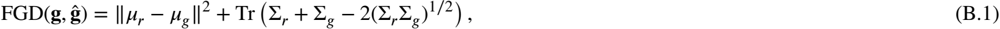
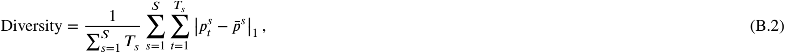
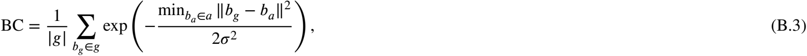
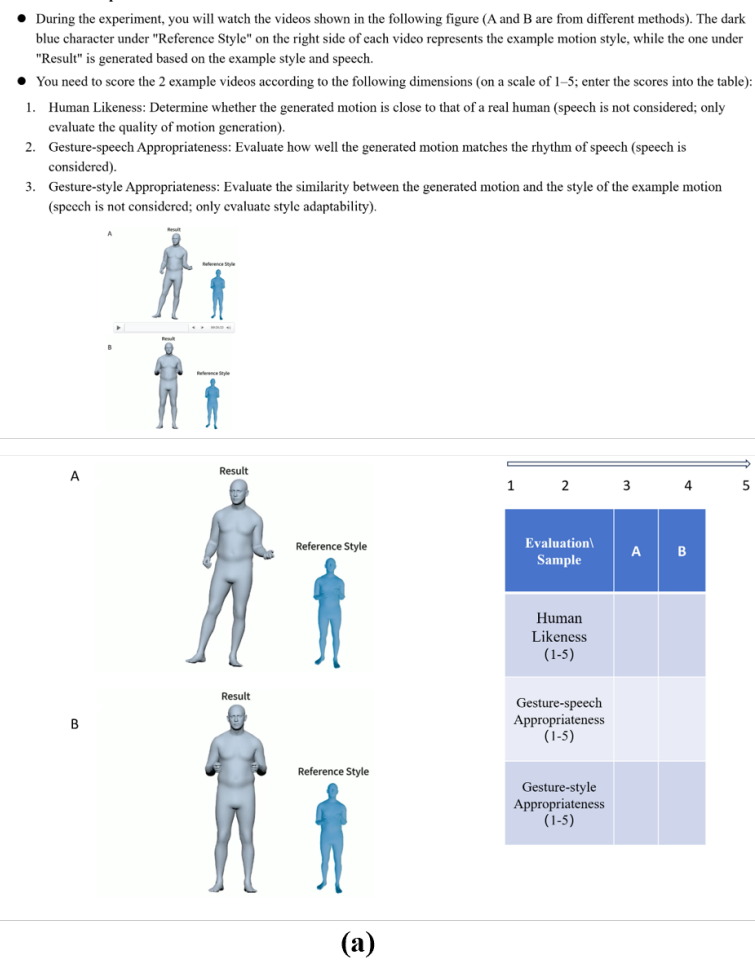
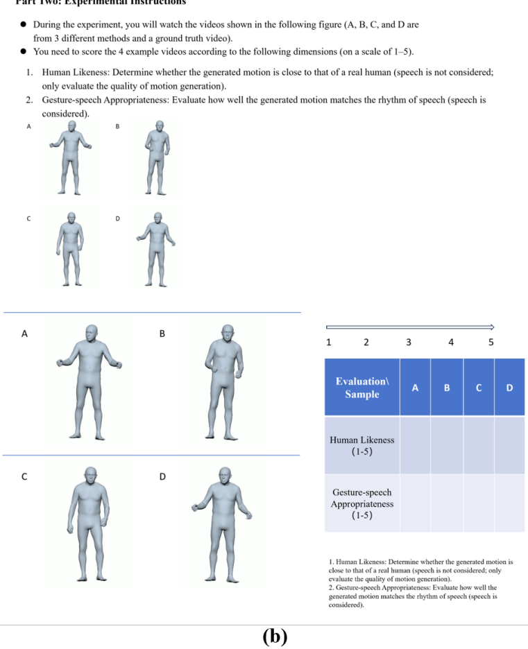
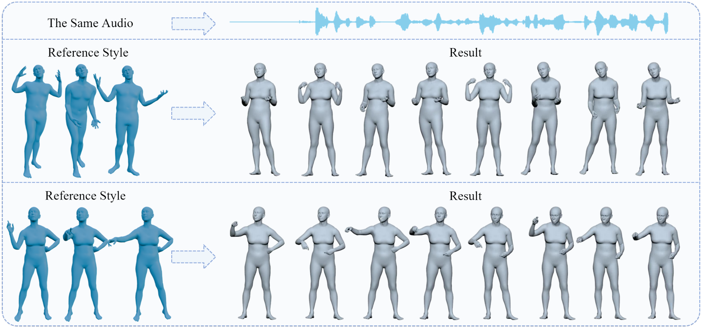
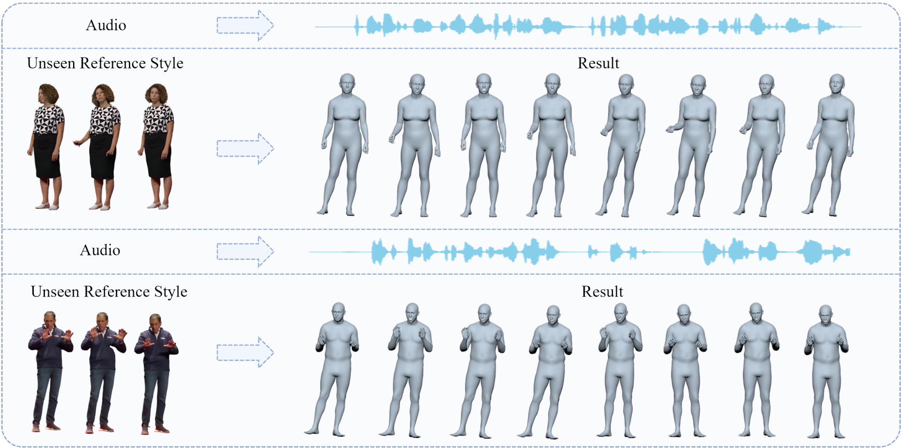

A. Limitations of RVQ-VAE in Facial Expression Modeling
The facial training data comprises 100-dimensional FLAME expression parameters, and its training optimization involves two distinct loss functions. The first loss function constrains the continuous representation obtained by processing the FLAME parameters through the RVQ-VAE [1] encoder, while the second loss function constrains the vertex positions (10475 vertices) obtained after processing the continuous representation through the decoder, with additional constraints on velocity and acceleration. It is crucial to emphasize that the key metrics for evaluating facial expression generation quality are all computed based on these vertices.
Without using RVQ-VAE, the 100-dimensional expression parameters and the 10475 vertices maintain an exact correspondence. However, introducing RVQ-VAE adds a quantization substitution operation during decoding, where quantization errors cause inconsistencies between the expression parameters and the vertices. Even minor quantization errors may lead to significant deviations in vertex positions, resulting in inconsistent learning objectives between the two loss functions. This inconsistency may hinder the diffusion model from effectively learning the distribution in the latent space.
B. Metric Details
Fréchet Gesture Distance (FGD). FGD evaluates the overall quality of generated gestures by comparing the distribution of latent features extracted from generated gestures and ground-truth gestures using a pre-trained network [2]. The formula is:


where 𝜇𝑟 and Σ𝑟 represent the first and second moments of the latent feature distribution extracted from ground-truth gestures 𝐠, while 𝜇𝑔 and Σ𝑔 represent the first and second moments of the latent feature distribution extracted from generated gestures ̂𝐠. Here, ‖ ⋅ ‖2 denotes the squared Euclidean distance, and Tr(⋅) denotes the trace of a matrix.
Diversity. For each generated sequence, we first compute the absolute deviation of each frame's pose from the sequence-level mean pose, then accumulate the deviations over all test sequences and divide by the total number of frames:


where ̄𝑝𝑠 = 1 𝑇𝑠 ∑𝑇𝑠 𝑡=1 𝑝𝑠𝑡 is the mean pose of sequence 𝑠, 𝑝𝑠𝑡 ∈ ℝ𝐽×3 denotes the joint positions at frame 𝑡, 𝑆 is the total number of test sequences, and 𝑇𝑠 is the number of frames in sequence 𝑠. A higher value indicates more diverse motion.
BC Dev. Beat Constancy (BC) evaluates audio-gesture synchronization by measuring the coincidence between motion beats and audio beats. The raw BC score is computed as:


where 𝑔 and 𝑎 are the sets of gesture beats and speech beats, respectively. However, a higher BC score does not necessarily indicate better performance, as it can be inflated by motion jitter or outliers [3]. Therefore, we use the deviation between the BC of the generated results and that of the ground-truth data as the evaluation metric, denoted as BC Dev.
C. Details of User Study
Screenshots of the user research system are shown in Fig. (C.1) and Fig. (C.2). Fig. (C.1) illustrates the user study interface with the style encoder, while Fig. (C.2) shows the interface without the style encoder. To reduce order effects, the video sequences for different methods were randomized. Following DiffuseStyleGesture [4], the evaluation involved 20 participants aged between 20 and 30 with good English proficiency, primarily graduate students from our institution, with a few from other universities.
D. Additional Visualization Results
We present additional qualitative visualization results in Fig. (D.1) and Fig. (D.2). Fig. (D.1) shows the results generated using the 3D style encoder. Fig. (D.2) shows the corresponding results generated using the 2D style encoder, where style features are extracted from video inputs.








References
[1] Lee, D., Kim, C., Kim, S., Cho, M., Han, W.S., 2022. Autoregressive image generation using residual quantization, in: Proceedings of the IEEE/CVF conference on computer vision and pattern recognition, pp. 11523-11532.
[2] Aberman, K., Li, P., Lischinski, D., Sorkine-Hornung, O., Cohen-Or, D., Chen, B., 2020. Skeleton-aware networks for deep motion retargeting. ACM Transactions on Graphics (TOG) 39, 62-1.
[3] Chen, J., Liu, Y., Wang, J., Zeng, A., Li, Y., Chen, Q., 2024. Diffsheg: A diffusion-based approach for real-time speech-driven holistic 3d expression and gesture generation, in: Proceedings of the IEEE/CVF Conference on Computer Vision and Pattern Recognition, pp. 7352-7361.
[4] Yang, S.,Wu, Z., Li,M., Zhang, Z., Hao, L., Bao,W., Cheng,M., Xiao, L., 2023. Diffusestylegesture: Stylized audio-driven co-speech gesture generation with diffusion models. arXiv preprint arXiv:2305.04919 .